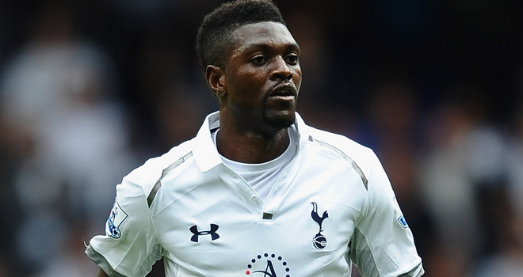

Emmanuel Adebayor, a disgrace to football
The largest rivalry in English football is Arsenal vs. Spurs. These teams have had a major rivalry since Arsenal moved to North London. The rivalry between the teams is very competitive and both teams and their fans hate each other. So you would think that the players, if dedicated to one of the teams, would NEVER play for the other. Of course some money greedy player will move for the high salary, leaving the fans that supported him for years,
The face of a traitor
Naturally, now every Arsenal fan in the world hates this man and the only man hated more than this is Robin Van Persie, but that's a different story entirely. The only thing worse than leaving your club for money, is to come back to play against them and celebrate in front of their fans, but certainly, no one would ever do that, right?